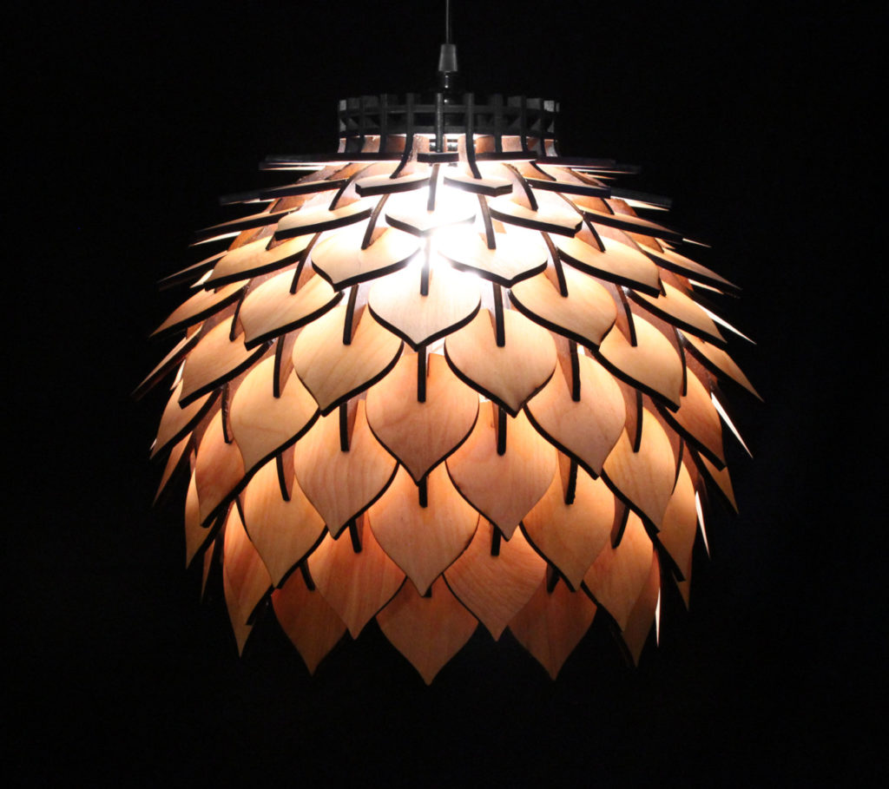
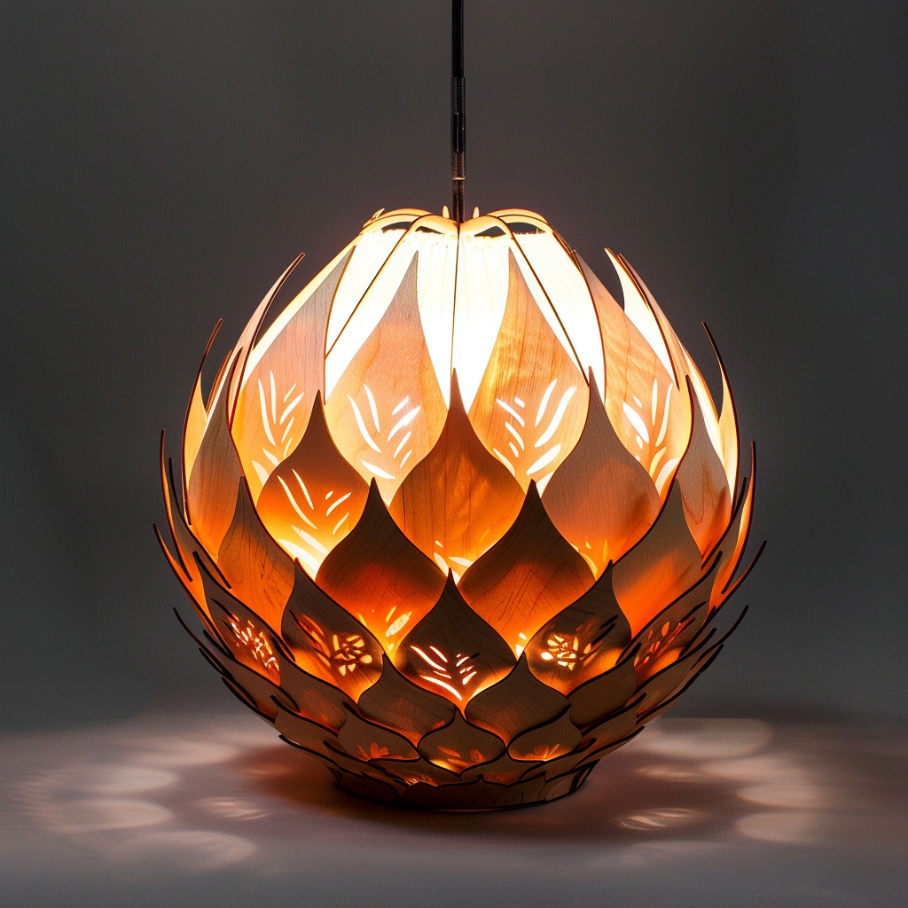
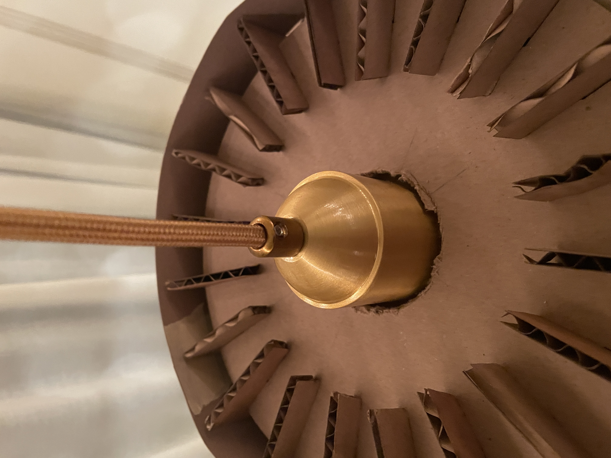
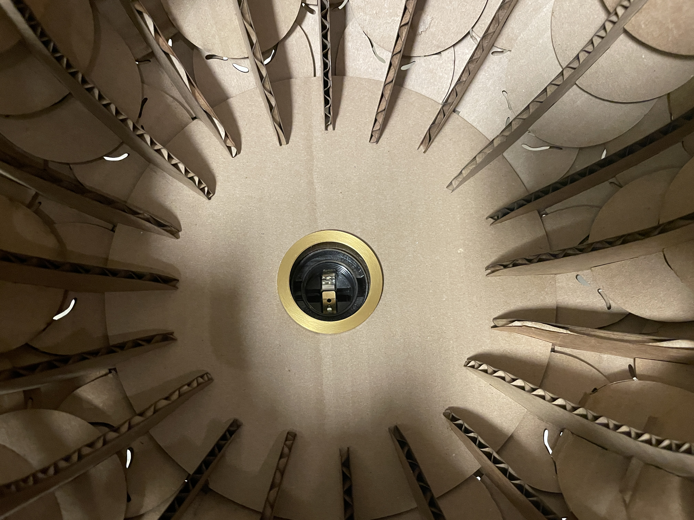
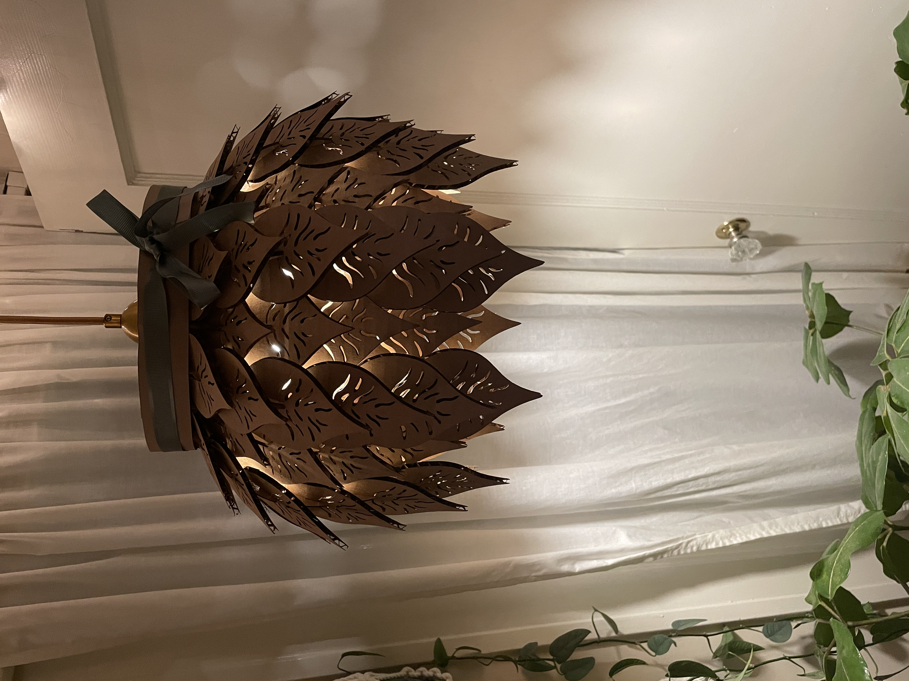

01Lasers & Cardboard
Verdura Lamp
We were assigned to create a kit with a minimum of 30
laser-cut cardboard parts featuring interlocking slots
that ensure a secure press fit, resistant to light shaking.
I added the requirement that the end result should be
something I'll use or could gift to someone that would
use it. Also, I don't find cardboard particularly nice to look
at, so I also wanted my design to hide as much of the cross-sectional
corrugate as possible.
Adobe Illustrator was used to design the shapes because I wanted
organic, hand-drawn shapes and I wanted to explore how the software
does when the end goal is a physical object. It worked fine for this
project, but I would not recommend it. Changing measurements for a new
material would be a huge pain and would absolutely be faster to move
to a parametric software like Rhino or SolidWorks.
I'm happy with this prototype and I hit my own goals, but I would
decrease the flare of the shade's ribs and increase the size gradient
of the leaves. All together, there are 134 laser-cut pieces.
Tools, Materials, & Credits
- Midjourney: Stylizing the inital idea
- Adobe Illustrator
- Hanging Pendant Light
- Laser Cutter
- Cardboard
Idea Source Image : An AI might have sloppily made this whole site.
Process
I started by searching for organic and artistic ideas before coming accross this image.
I then used Midjourney to create a more sylized version. Now to combine ideas in my design.
Digital Design
I started by sketching out the basic leaf shape, transfering
that to Illustrator, and smoothing the image trace.
The slot sizes were determined by the thickness of my cardboard (4mm).
After a test cut I changed the slots to 3.85mm so that all fittings
would be tight.
From there it was a lot of repetition as I placed all instances
onto frames that mapped to the sizes of cardboard I had.
These are the pieces used. You can see the evolution of the stems between test cuts. The two on the right were the two variations used.

LOTS of leaves.
Fabrication
All in all, cutting took over 3 hours because of some mistakes, learning
this specific machine, and due to the size of the lamp.
Assembly was monotonous but fun. I added a band of paper and ribbon to
hide the ribs once hung.

A full sheet of leaves being cut.


1 instance of 20 stems.

Starting to take shape.
The inside of the assembled shape. No holes are cut for the lamp hardware yet because I didn't have the measurements at the time of cutting. I used a hole saw on a drill once the hardware arrived.
The outside of the assembled shape.
My original goal was to use this as a table lamp, but the inside , with all the ribs showing, was too visible oon the table. The flare of the ribs would need to be reduced to hide the interior better. I liked how it looked at this angle though, so I flipped it over, turning it into a pendant lamp.
Lamp hardware installed.
 It looks great in the daylight.

But is much more enjoyable in the evening.
